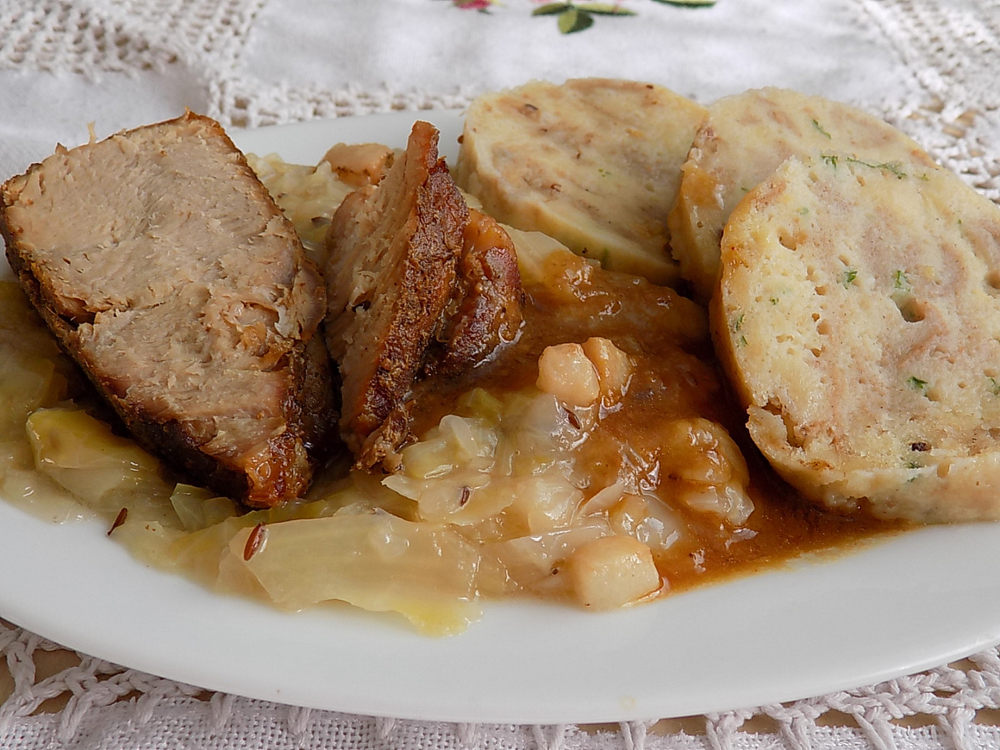

Knedlo, Vepřo, Zelo

Vepřo knedlo zelo je absolutní česká klasika, která se těší oblibě v mnohých domácnostnech i hospodác.
My jsme pro vás našli
vylepšený recept na vepřo knedlo zelo podle Václava Friče, který hravě zvládnete. V neděli už nebude chtít obědvat nic jiného!
Ingredients:
- 500 g vepřové krkovice
- 5 stroužků česneku
- sůl
- mletý pepř
- kmín
- 1 velká cibule
- 50 g vepřového sádla
- 1 lžíce hladké mouky
- 0,75 sáčku kysaného zelí
Steps
- Předehřejte troubu na 170 °C. Cibuli nakrájejte na kostičky.
- Krkovici osolte, opepřete, posypte kmínem a důkladně ji ze všech stran potřete česnekem.
- Maso posaďte do pekáče na kostičky cibule, přidejte sádlo, podlijte hrnkem horké vody a pečte do změknutí asi 1 a půl hodiny.
- Zelí: slijte lák do hrnečku a zelí pokrájejte.
- Na rozehřátém sádle osmahněte slaninu, cibuli a kmín.
- Vmíchejte zelí, zalijte lákem a přiveďte k varu. Pak přidejte sůl, 3 lžíce cukru a pokud je zelí málo kyselé, tak 2 lžíce octa.
- Vařte 15 minut.
- Upečené maso vyjměte z pekáče a nechte ho patnáct až dvacet minut odpočinout.
- Po přibližně 15 minutách dušení zaprašte zelí za stálého míchání hrubou moukou a
znovu asi patnáct minut vařte na mírném plameni. Nebo z mouky připravte záklechtku a zelí zahustěte.
- Pekáč, ve kterém jste pekli maso, postavte na sporák a zahřívejte.
- Vypečenou šťávu s kousky cibule nechte lehce odpařit, pak vsypte mouku a trochu ji osmahněte.
- Zalijte 200 ml vody (nebo dle potřeby) a zhruba patnáct minut vařte.
- Podávejte s knedlíkem.